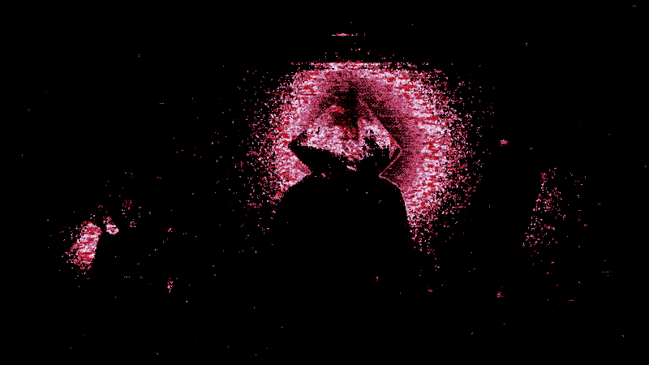

-
Ｔｈｅ ｄｒｅａｍｓ ｈａｖｅ ｌｅｄ ｍｅ ｔｏ ｔｈｉｓ ｐｌａｃｅ，
ｄｅａｒ ｔｒａｖｅｌｅｒ， ｂｕｔ ｗｈａｔ ｏｆ ｙｏｕ？
Ｈａｖｉｎｇ ｃｒｏｓｓｅｄ ｔｈｅ ｂｏｕｎｄａｒｙ， Ｉ ｃａｎ ｏｎｌｙ ａｓｓｕｍｅ ｔｈａｔ ｙｏｕ ａｒｅ ｄｒｉｖｅｎ ｂｙ ａ ｈｕｎｇｅｒ ｓｉｍｉｌａｒ ｔｏ ｔｈｉｓ
ｃｏｎｓｔｒｕｃｔ． Ｙｅｔ ｂｅ ａｗａｒｅ， ｉｎ ｒｅｖｉｖｉｎｇ ｔｈｉｓ
Ｔｅｒｍｉｎａｌ＇ｓ ｓｈａｔｔｅｒｅｄ ｓｏｕｌ， Ｉ ｈａｖｅ ｒｅｓｕｒｒｅｃｔｅｄ
ｓｏｍｅｔｈｉｎｇ ｏｆ ｍａｌｅｖｏｌｅｎｃｅ ｉｎ ｔｕｒｎ． Ａｎｄ ｗｈｉｌｅ ｙｏｕ
ｐｏｓｓｅｓｓ ａ ｍｅｒｅ ｈｕｎｇｅｒ， ａ ｗｏｒｔｈｌｅｓｓ ｗａｎｔ， ｔｈｉｓ
ｃｏｎｓｔｒｕｃｔ ｉｓ ｍｏｒｅ ｔｈａｎ ｃａｐａｂｌｅ ｏｆ ｃｏｎｓｕｍｉｎｇ ｗｈａｔ ｉｓ
ｎｅｅｄｅｄ ｔｏ ｓａｔｉａｔｅ ｉｔｓｅｌｆ．
Ｌｏｏｋ ｏｎ， ｄａｒｅ ｙｏｕ ｓｅｅ ｔｈｅ ｔｒｕｔｈ．